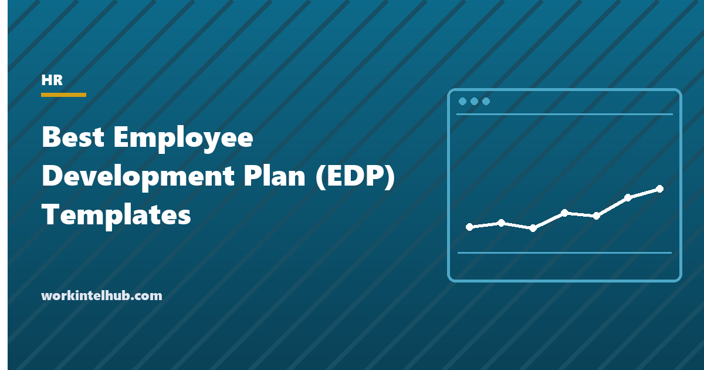

Best Employee Development Plan (EDP) Templates

An employee development plan (EDP), also called an individual development plan, records where an employee wants to go, the gap between their current skills and that destination, and the activities that will close it, with dates and a review. It is the document that turns "we invest in our people" into a schedule. Done badly it is a list of courses nobody attends; done well it is mostly on-the-job experience with a manager who checks in.
Six templates cover the common forms: an individual development plan, a plan built on the 70-20-10 model (experience, exposure, education), a competency gap plan that starts from a rating, a leadership track for high-potential employees, a new manager plan for the first year in a people role, and a team development tracker that shows every plan's status on one sheet. The Excel workbook tracks activities and progress; Word and PDF carry the plans for the one-on-one and the file.
Download the templates
Free files: Word, Excel and PDF
Three files, free, no email required. Word to edit, Excel to track, PDF to print or share.
Templates open in Microsoft Word, Excel, Google Docs and Sheets, LibreOffice and any PDF reader. Free to use and adapt for your organisation.
The six templates
| Template | For | Core of the plan |
|---|---|---|
| Individual development plan | Any employee | Aspiration, two or three development areas, activities with dates and measures |
| 70-20-10 plan | Employees whose plans are all courses | Experience first, exposure second, education third |
| Competency gap plan | Roles with a competency framework | Required against current level, with the gap prioritised |
| Leadership track | High-potential employees | Five leadership capabilities with evidence and experiences |
| New manager plan | First-year people managers | Four periods with focus, activities and support |
| Team tracker | Managers and HR | Every plan's status on one sheet |
What makes a development plan work
Three things, in order. The employee wrote most of it: plans written by managers for employees are complied with, not pursued. The activities are mostly experience: a stretch assignment, a project outside the current role, a responsibility taken on early, because that is where skills are built; the 70-20-10 mix sheet shows whether the plan leans that way or is a list of courses. And it is reviewed: a plan looked at twice a year is a form; a plan discussed monthly in the one-on-one, with the one-on-one template carrying the question, is a plan.
Two or three development areas, not six. Development is slow and attention is finite; a plan with six areas develops none.
Starting from a gap
Where a competency framework exists, the gap plan starts from it: the level the role requires, the level the employee is at, with evidence for the rating, and the gap prioritised. Gaps of two or more levels get experience-based activities with a sponsor; gaps of one get exposure and practice. Ratings without evidence are opinions, and the plan should carry the example that justified each. The performance review templates produce the ratings this plan consumes; the performance tracking guide covers the evidence.
Development as succession
- The leadership track plan is the development side of the succession plan in the workforce planning templates; readiness in one should match the other.
- New managers fail in the first year for predictable reasons (no one-on-ones, no feedback, no delegation); the new manager plan schedules the fixes before they are needed.
- The team tracker makes development a management metric: plans in place, activities on time, reviews held. The retention strategies guide covers why it matters: development is the most cited reason people stay or leave.
- Budget for the 10 percent; the 70 and 20 cost mostly manager time.
Key takeaways
- A development plan records aspiration, two or three gaps, experience-led activities with dates and measures, and a review cadence.
- The employee writes most of it; the manager supplies experiences and checks in monthly.
- Lean the mix toward experience and exposure; courses are the 10 percent.
- Track plans at team level and tie leadership tracks to the succession plan.
Frequently asked questions
What is an employee development plan?
A written plan agreed between an employee and their manager that records the employee's career aspiration, the skills or competencies to develop, the activities that will develop them (mostly on-the-job experience, plus exposure and education), dates, measures of success and review points. It is also called an individual development plan or IDP.
What is the 70-20-10 model?
A guideline that development comes roughly 70 percent from experience (stretch assignments, projects, new responsibilities), 20 percent from exposure (mentors, coaches, feedback, networks) and 10 percent from education (courses, reading, certification). The proportions are a reminder, not a rule, that courses alone rarely change capability.
How many development goals should a plan have?
Two or three. Development takes sustained attention, and plans with more goals typically achieve none of them. Add new goals when existing ones are complete.
How often should a development plan be reviewed?
Monthly in the one-on-one, with a formal review at least twice a year alongside performance conversations. Plans reviewed only annually become forms.
Who writes the development plan?
The employee drafts it; the manager contributes experiences, exposure and support and agrees the dates. Plans written by managers for employees are complied with rather than owned.